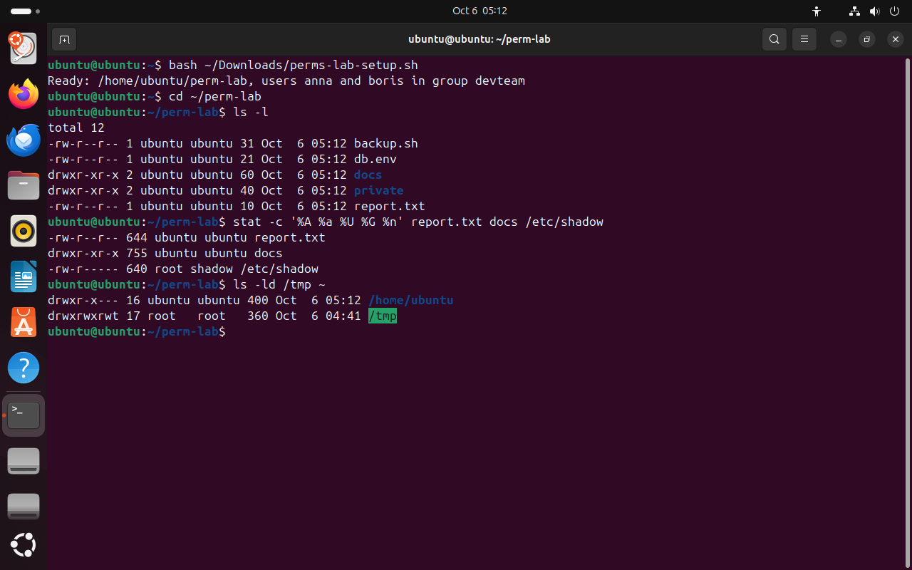

Часть 1 из 7
Права в строке ls -l
В этой части подготовим учебный каталог, разберём строку вывода ls -l по полям и вспомним, какая из трёх троек прав действует для процесса.
1.1 Учебный набор
На прошлом занятии мы создавали пользователей и группы и настраивали общий каталог командой chmod 2770. На этом занятии разберём, что каждое право разрешает файлу и каталогу, как права записываются буквами и числами, кто может менять владельца и какие права получают новые файлы.
Для опытов нужен каталог с файлами разных видов и два пользователя, кроме вас. Их создаёт скрипт perms-lab-setup.sh из материалов занятия. Он создаёт каталог ~/perm-lab с отчётом, скриптом резервного копирования, файлом с паролем и двумя подкаталогами, а также учётные записи anna и boris в группе devteam. Если anna и boris уже есть после занятия 5, скрипт их не пересоздаёт.
- 1Скачайте
perms-lab-setup.shиperms-lab-check.shиз раздела «Материалы». Firefox сохраняет файлы в~/Downloads. - 2Откройте
perms-lab-setup.shв текстовом редакторе и прочитайте команды: скрипт создаёт учётные записи черезsudo. - 3Выполните
bash ~/Downloads/perms-lab-setup.sh. Последняя строка вывода начинается со словаReady.
1.2 Строка ls -l по полям
Команда ls -l выводит о каждом файле одну строку. На этом занятии нужны первые четыре поля: тип объекта и права, число ссылок, владелец и группа.
| Поле | Пример | Что означает |
|---|---|---|
| тип | -, d, l | первый символ: - — обычный файл, d — каталог, l — символическая ссылка |
| права владельца | rw- | символы 2–4: чтение, запись, выполнение для владельца |
| права группы | r-- | символы 5–7: то же для участников группы файла |
| права остальных | r-- | символы 8–10: для всех остальных пользователей |
| число ссылок | 1 | сколько имён указывает на inode; у каталога — сколько записей ссылаются на него |
| владелец | ubuntu | пользователь, которому принадлежит файл |
| группа | ubuntu | группа файла: к ней применяется вторая тройка |
В каждой тройке позиции постоянные: первая — r (read, чтение), вторая — w (write, запись), третья — x (execute, выполнение). Прочерк на позиции означает, что права нет. Поэтому r-x читается как «чтение и выполнение, без записи».
Команда stat выводит сведения о файле из его inode. С ключом -c она печатает только нужные поля по шаблону: %A — права буквами, %a — те же права числом, %U — владелец, %G — группа, %n — имя. Число рядом с буквами — те же права в другой записи: 644 означает rw-r--r--.
bash ~/Downloads/perms-lab-setup.sh# создать ~/perm-lab, anna и borisчто делает
Что делает команда. Выполняет скрипт набора: создаёт ~/perm-lab с файлами для опытов и пользователей anna и boris в группе devteam.
По частям:
bash- запустить оболочку bash и выполнить команды из файла
~/Downloads/perms-lab-setup.sh- файл скрипта (путь от домашнего каталога)
cd ~/perm-labчто делает
Что делает команда. Переходит в учебный каталог занятия.
По частям:
cd- сменить текущий каталог
~/perm-lab- куда перейти (путь от домашнего каталога)
ls -l# строки файлов и каталоговчто делает
Что делает команда. Выводит подробные строки файлов текущего каталога: тип, права, владельца, группу, размер и дату.
По частям:
ls- вывести содержимое каталога
-l- подробный список: права, владелец, группа, размер
stat -c '%A %a %U %G %n' report.txt docs /etc/shadow# права буквами и числомчто делает
Что делает команда. Выводит для трёх объектов права буквами и числом, владельца, группу и имя.
По частям:
stat- вывести сведения о файле из inode
-c '%A %a %U %G %n'- вывести только поля по шаблону '%A %a %U %G %n'
report.txt- о каком файле (путь относительно текущего каталога)
docs- о каком файле
/etc/shadow- о каком файле (абсолютный путь)
ls -ld /tmp ~# права двух системных каталоговчто делает
Что делает команда. Выводит строки самих каталогов /tmp и домашнего каталога, не заходя внутрь.
По частям:
ls- вывести содержимое каталога
-l- подробный список: права, владелец, группа, размер
-d- показать сам каталог, а не его содержимое
/tmp- что показать (абсолютный путь)
~- что показать (домашний каталог)
- 1тип: - — обычный файл, d — каталог
- 2права владельца: rw-
- 3права группы: r--
- 4права остальных: r--
- 5владелец и группа файла
- 6stat: те же права буквами и числом 644
- 7домашний каталог закрыт для остальных: ---
- 8/tmp: в последней позиции t вместо x


Весь снимок ↗Строки ls -l и вывод stat для файлов набора и системных объектов.
Что показывает снимок. Скрипт создал набор; у файлов права rw-r--r--, у каталогов rwxr-xr-x; stat выводит те же права числами 644 и 755; домашний каталог закрыт для остальных, у /tmp в конце стоит t.
Где это пригодится. Разбор любой ошибки Permission denied начинается со строки ls -l: по ней видно владельца, группу и тройку, которая действует для процесса.
1.3 Чья тройка действует
Права проверяются для процесса: у процесса есть UID пользователя, который его запустил, и список групп. Ядро сравнивает их с владельцем и группой файла и выбирает одну тройку по порядку. Если UID процесса совпадает с владельцем — действуют права владельца. Иначе, если среди групп процесса есть группа файла, — права группы. Во всех остальных случаях — права остальных. Тройки не складываются: применяется первая подходящая.
Правило «первая подходящая тройка» даёт неожиданный результат, если права владельца меньше прав группы. Файл с правами ---rw-r-- его владелец прочитать не сможет, хотя состоит в группе файла: для владельца проверяется только первая тройка. Такие права встречаются редко, но по этому порядку разбирают любой отказ Permission denied.
Права похожи на правила входа в здание: у сотрудника конкретного кабинета свой ключ, у отдела — общий пропуск на этаж, у посетителей — доступ только в холл. Охранник смотрит, кто вы, и применяет одно правило по порядку: если вы хозяин кабинета, ваш отдельный ключ определяет доступ, даже если пропуск отдела давал бы больше.
Итоги части 1
- Первый символ строки
ls -l— тип объекта, следующие девять — три тройки прав: владелец, группа, остальные. - В тройке позиции постоянны:
r,w,x; прочерк — права нет. stat -c '%A %a %U %G %n'выводит права буквами и числом, владельца, группу и имя.- Ядро применяет одну тройку: владельца, если UID совпал; группы, если группа файла есть у процесса; иначе остальных.
В отчётСнимок ls -l с подписанными полями одной строки.